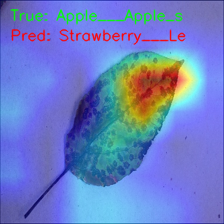
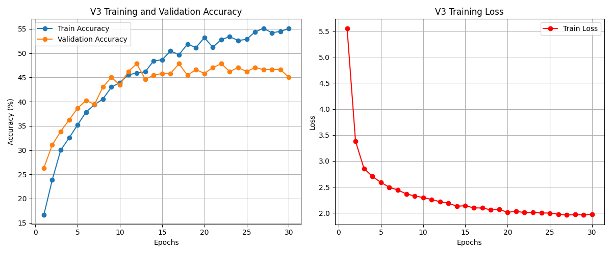
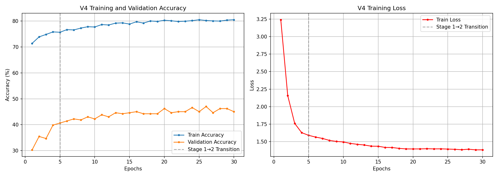

AI 도메인 적응(Domain Adaptation) 연구와 한계 극복기
우리는 단색 배경의 깨끗한 실험실 데이터(PlantVillage)로 완벽한 인공지능을 만들었습니다.
하지만, 실제 흙과 배경이 섞인 야외 데이터(PlantDoc)를 테스트하자 결과는 처참했습니다.
AI가 대체 어디를 보고 판단하는지 뇌 구조를 시각화 해보았습니다.
우리는 이것이 Domain Shift (도메인 이동) 현상임을 증명했습니다.

인간의 직관적인 해결책: "전체 이미지의 배경(흙, 가지)을 AI(rembg)로 다 날려버리자!"

또 다른 직관: "기존 깨끗한 데이터(5000장)를 야외 데이터와 섞어서 질병 패턴 망각을 막아보자!"

꼼수(전처리, 데이터 혼합)를 버리고 정공법을 택했습니다.
극한의 Domain Shift 현상을 극복할 때,
인간의 직관에 의존한 물리적 전처리(배경 제거)는 함정입니다.
모델이 가혹한 환경에 노출된 원본 데이터 그 자체를
수학적 최적화와 강건한 증강기법을 통해 스스로 이겨내게 하는 것.
그것이 진정한 도메인 적응(Domain Adaptation) 입니다.
정확도를 80~90% 이상으로 끌어올리기 위한 4가지 고도화 전략을 제안합니다.